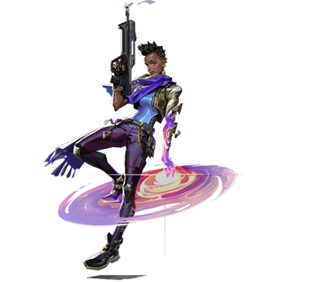

| Proveniente de Accra, Ghana, Efia Danso es una Radiante con poderes relacionados con las energías cósmicas, contenida por un guantelete dorado de Guardián. Ella los usa en su papel de guardián astral, asegurándose de que cualquier evento que altere el universo no tenga consecuencias importantes. Reclutada por el Protocolo VALORANT como su decimosexto agente, "Astra", continúa sirviendo como guardiana astral entre sus misiones para el VP, aunque a veces sus dos roles se han juntado. Cuando el Protocolo estaba rastreando al fugitivo Varun Batra mientras huía de su antiguo empleador en el sur de Asia, Astra descubrió que Batra también estaba en posesión de un artefacto Guardián, un juego de cinco anillos y un brazalete. Obligado aún más a traerlo, el vicepresidente pudo rescatar y posteriormente reclutar a Batra como agente "Harbor". Con el acceso al brazalete, Astra pudo deducir de los grabados que le quedaron que podría funcionar como una llave para una ciudad Guardiana perdida que nunca había podido encontrar en su tiempo como Guardiana. Sin embargo, para su sorpresa, Harbour reveló que lo había encontrado antes; la "Ciudad de las Flores" estaba ubicada en los Ghats occidentales de la India, pero Harbour había llegado allí solo para encontrarla diezmada y saboteada. Todavía con la esperanza de salvar algo de esta situación, la atención de Astra se centró en Omega y en la posibilidad de que también exista allí una contraparte de la ciudad. Investigaciones posteriores revelaron que efectivamente existía, pero el Protocolo no era el único grupo interesado en él, también lo estaban sus contrapartes Omega, la Legión VALORANT, y con sus motivos desconocidos y la ciudad de Alpha en ruinas, la posibilidad de que la Legión encienda su propia ciudad representaba una amenaza catastrófica para millones de α-indios. Junto con Harbour y Skye, Astra cruzó a Omega para hacer el largo viaje desde Lisboa hasta el sur de la India, mientras las fuerzas de seguridad de Omega los perseguían. Cuando finalmente llegaron, la Legión encontrada había llegado primero y se estaba preparando para encender la ciudad. Astra solo pudo echar un vistazo breve antes de que el equipo necesitara desactivar la capacidad de la ciudad para encenderse y luego retirarse del sitio. Habiendo podido prevenir lo peor para Alpha pero incapaz de acceder a la ciudad bajo el control de la seguridad de Legion y Omega, Astra todavía tiene mucho que aprender sobre los Guardianes y su historia. |
 |